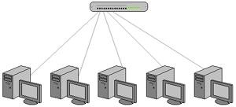
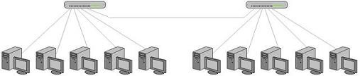
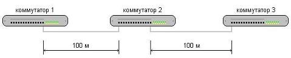

Топология - это способ физического соединения компьютеров в локальную сеть. Существует несколько стандартных топологий. Наиболее распространенный тип соединения «звезда» объединяет каждый компьютер с центральным устройством (коммутатором). Такое соединение напоминает подключение бытовой техники в удлинитель с несколькими розетками. Если компьютеров больше, чем соединительных гнезд (портов) в коммутаторе, то используют несколько коммутаторов, объединенных между собой.
Все соединения производятся кабелем типа «витая пара». По принципам передачи пакетов информации такая сеть относится к типу Ethernet. Пропускная способность стандартной Ethernet не более 10 Мбит/с. В настоящее время широко используется Fast Ethernet с пропускной способностью 100 Мбит/с и Gigabit Ethernet с ограничением по скорости 1 Гбит/с.
Часть компьютеров, входящих в локальную сеть, может быть расположена в другом помещении. Тогда такие группы можно объединить по следующей схеме:
Топология типа «звезда» очень удобна, т.к. легко меняется конфигурация сети. Добавление в сеть нового компьютера или удаление компьютера из сети состоит всего лишь в подсоединении или отсоединении разъема кабеля от коммутатора. Однако при проектировании локальной сети необходимо помнить, что максимальная длина кабеля от порта до порта не должна превышать 100 метров. Если расстояние между коммутаторами или между коммутатором и компьютером превышает 100 м, то его можно поделить на участки по 100 метров и соединить их через коммутаторы.
Кабельная система включает в себя две основные подсистемы: горизонтальная и вертикальная. Горизонтальная подсистема – это топология «звезда», расположенная в пределах одного этажа. Вертикальная подсистема связывает отдельные этажи здания.
Горизонтальная подсистема делится на два типа:
При создании централизованной подсистемы коммутатор, сервер, основные разделяемые устройства, например, принтер, устанавливаются в одном помещении. Кабельная система сводится от каждого компьютера в эту точку. Администрирование осуществляется централизовано. Это позволяет:
При создании децентрализованной подсистемы, коммутаторы ставятся в разных помещениях одного этажа, объединяя компьютеры в небольшие группы. Затем все коммутаторы объединяются. Применение децентрализованного администрирования позволяет: